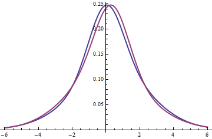

1. Identify which distribution shape does the image below represent.

Attempts: 0 / 3
2.The heights of the 40 trees in each of two forests are collected. Calculate the mean of the collected data and choose the answer below.

Attempts: 0 / 3
3. Ms. Taylor gave her class of 25 statistics students a first test worth 100 points. Suppose Ms. Taylor was nice and added 20 points to each student’s test score. How would this affect the distribution of scores? (Hint: Effect of adding or subtracting a constant of the distribution)
Attempts: 0 / 3